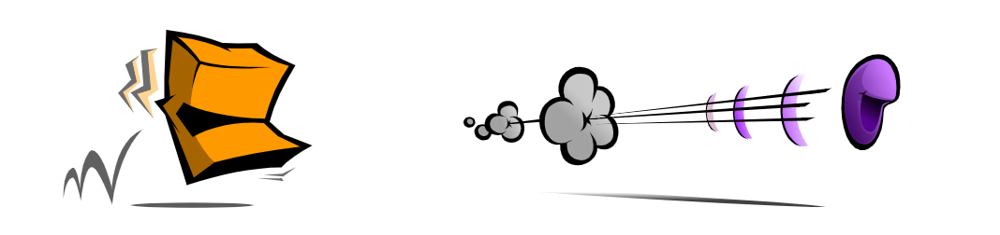

Hi! I'm a Square
And I'm a Circle
We were asked to participate in a study about Pack Hunting
We were asked to participate in a study about Pack Hunting
I played the hunter... a deadly, deadly killer.
And I was the innocent prey, just running for my life!
We were placed in a number of experimental
hunts, each with different characteristics.
Afterwards, we were asked to report back about our experiences in each situation.
So, here we go!
Afterwards, we were asked to report back about our experiences in each situation.
So, here we go!
In the first hunt, we were dropped in an open
field.
As the prey, I was given a much higher top speed than the hunter.

As the prey, I was given a much higher top speed than the hunter.
As you can see, there was simply NO WAY for me
to catch up. No matter what, Circle could
ALWAYS outrun me.
In fact, it didn't matter how many prey circles were in the scene, I could NEVER catch anyone.
In fact, it didn't matter how many prey circles were in the scene, I could NEVER catch anyone.

That seems kind of obvious: in an open field,
if the prey's top speed is faster than the
hunter, no kills will ever be made.
Things were reversed for the next hunt. This
time eYe
had a much higher top speed than the prey.

I simply couldn't escape!
No matter how many circles were placed in the scene, whichever circle was closest to the hunter got caught immediately.
Again, this ought to make perfect sense.
No matter how many circles were placed in the scene, whichever circle was closest to the hunter got caught immediately.
Again, this ought to make perfect sense.
It might seem like there could NEVER be any
way to create a fair hunt.
But wait...
But wait...
For the third hunt, I was again given a higher
top speed than the hunting square, but now,
obstacles
were randomly placed throughout the scene.

Just like before, I started off unable to catch
up to any of the prey circles.
But then something happened...
But then something happened...
I ran into a wall! I had to stop, and turn around
to get away from the wall.
I had no choice but to briefly run TOWARDS the hunter!
I had no choice but to briefly run TOWARDS the hunter!
That was all I needed.
When the obstacles forced Circle to zig-zag around, it was kind of like reducing the prey's top speed.
When the obstacles forced Circle to zig-zag around, it was kind of like reducing the prey's top speed.

When I ran into the wall, I had to stop, and turn around.
Sure, technically I was still faster, but I had to use some of my speed to run around the walls, instead of using all of it to increase my distance away from the hunter.
Sure, technically I was still faster, but I had to use some of my speed to run around the walls, instead of using all of it to increase my distance away from the hunter.
And, because I was slower, I trailed behind my
prey - I didn't even encounter the obstacles
until AFTER the prey had already run into them.
A lot of times, I turned around from a wall and
RIGHT INTO the waiting jaws of the hunting Square.
I wasn't WAITING ofcourse - it just appeared that
way because I was lagging behind due to my slower
speed.
To a lot of people, it appeared as though I was intentionally running my prey towards an obstacle, and then waiting for the catch, on purpose.
That's what they call an
To a lot of people, it appeared as though I was intentionally running my prey towards an obstacle, and then waiting for the catch, on purpose.
That's what they call an
EMERGENT property!
Of COURSE it's going to look like that ...
... and let me tell you why.
Hi, I'm a Lab Coat
You can tell from my clipboard that I must know what I'm talking about.
But what am I talking about?
You can tell from my clipboard that I must know what I'm talking about.
But what am I talking about?
It was being slower that allowed
the hunter to catch the prey.
By making fewer updates to his direction,
the hunter appears to be more focused on
pursuing the prey. A prey circle
has the time and speed and quickness of
opportunity to make many changes to
its position while the relative lethargy
of the square only permits the hunter
to update its postion after the fleeing
prey has made many twists and turns.
If the hunter had the same top speed as the prey, he would always be right on the heels of the prey, making the same number of twists and turns, following in the exact footstep of the prey, and never catching up.
Do you see? Being faster is a disadvantage to the hunter - when the hunter's top speed is too similar to the prey's top speed, there will never be a kill.
As we've seen, in open terrain, a faster hunter will kill every time, a slower hunter will never make a kill - but in the presence of obstacles, there's a range of speed below which the hunter is, obviously, too slow to ever make a kill, but also over which the hunter is too fast to take advantage of the obstacles.
Eventually, ofcourse, there's another range of higher speeds where the hunter is fast enough to outrun the prey; but what's fascinating is that there happens to be a range of lower speeds at which hunting is much more efficient.
If the hunter had the same top speed as the prey, he would always be right on the heels of the prey, making the same number of twists and turns, following in the exact footstep of the prey, and never catching up.
Do you see? Being faster is a disadvantage to the hunter - when the hunter's top speed is too similar to the prey's top speed, there will never be a kill.
As we've seen, in open terrain, a faster hunter will kill every time, a slower hunter will never make a kill - but in the presence of obstacles, there's a range of speed below which the hunter is, obviously, too slow to ever make a kill, but also over which the hunter is too fast to take advantage of the obstacles.
Eventually, ofcourse, there's another range of higher speeds where the hunter is fast enough to outrun the prey; but what's fascinating is that there happens to be a range of lower speeds at which hunting is much more efficient.

That sounds like good news!
Maybe ta you. I'm not that
excited by it.
Guys, listen - what's interesting is
that we've found a possible way to
achieve what we initially showed
could never happen.
Which is what, again?
That a slower hunter could
catch a faster prey.
Let's see what other possible ways could allow a slower hunter to catch a faster prey.
Let's see what other possible ways could allow a slower hunter to catch a faster prey.
Wait, what? I'm not sure I ...
Be quiet.